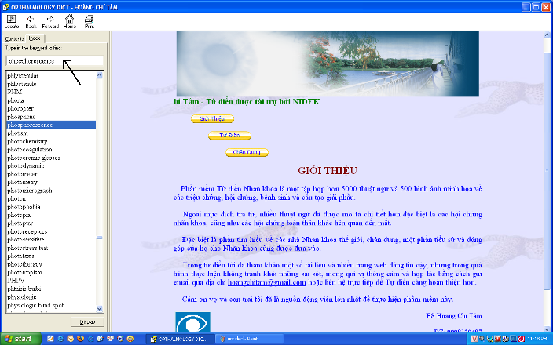
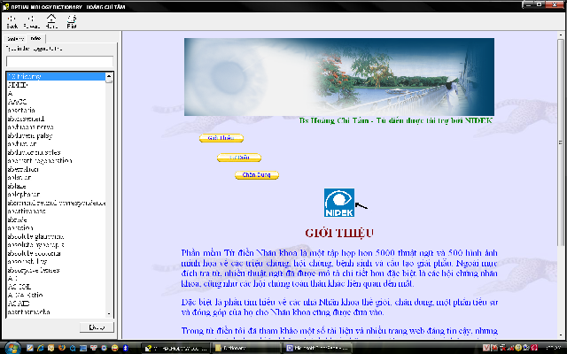

|


Hướng dẫn sử dụng Dictionary

-
Nhập từ cần tra vào (mũi
tên), từ vựng
sẽ xuất hiện với từ gần đúng nhất, chọn rồi nhấn enter hoặc click chuột kép
vào từ trong danh sách từ
-
Muốn quay trở lại trang chủ
nhấn Home
-
Muốn in nội dung nhấn Print
-
Muốn quay trở lại từ đã tra
trước nhấn Back
-
Bên trái có 2 tab: Contents
và Index. Tab Index chứa toàn bộ từ vựng trong tự điển. Tab Contents chứa
nội dung tự điển và các nội dung khác
-
Trong phần hiển thị nội dung sẽ có nhiều liên
kết đến những thuật ngữ hoặc hình ảnh, nhấn vào liên kết sẽ xuất hiện nội
dung cần xemd (ví dụ hình dưới click và icon NIDEK thông tin về sản phẩm
NIDEK sẽ xuất hiện)

|